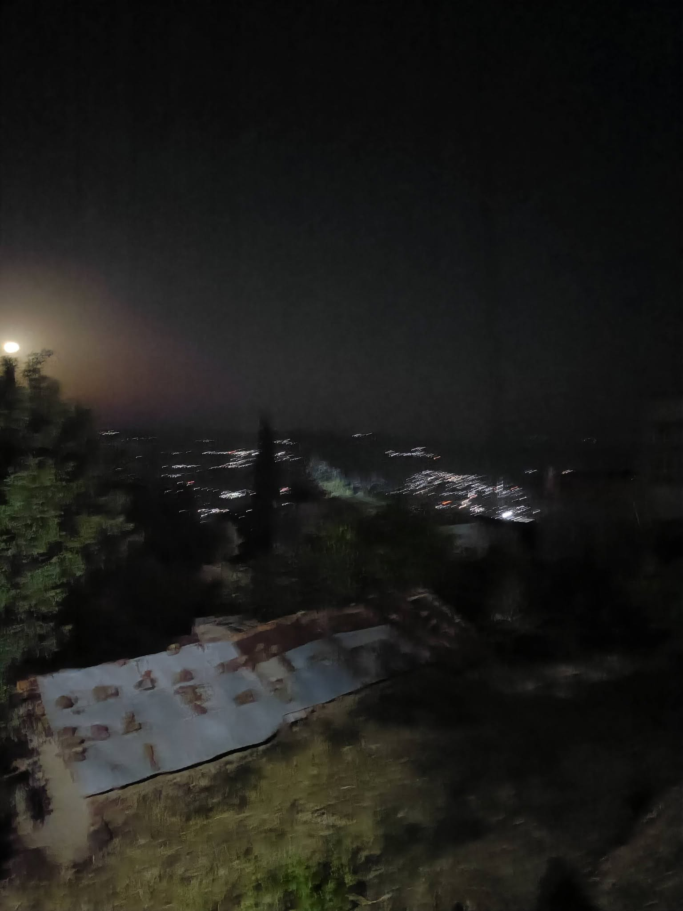

Je crie ton nom
Je murmure ton nom
comme on entrouvre une porte
sur une chambre
où dort encore le feu.
Je crie ton nom
dans le silence des nuits,
Quand l’ombre lentement
sur mes paupières glisse,
À peine trois syllabes,
et déjà quelque chose
en moi se soulève,
Quand mon cœur,
prisonnier
de ses anciens ennuis,
Cherche encore
ta lumière
au bord du précipice,
quelque chose
que je croyais mort
sous les longues années
du silence.
Je crie ton nom
quand le monde s’endort,
Comme un dernier aveu
confié aux étoiles.
Je crie ton nom
plus fort,
Et ta présence absente
habite encore
Chaque battement secret
derrière mon voile.
Je crie ton nom
au vent qui me répond,
À la mer qui l’emporte
et le rend à mes lèvres ;
Il traverse mes nuits
comme une lame
dans le velours,
réveille les chambres
oubliées de mon sang,
Ton nom devient prière,
vertige
et abandon,
Une flamme obstinée
qui renaît sous mes cendres,
Et fait trembler les murs
où j’avais enfermé
mes désirs.
Je crie ton nom
et soudain tout s’efface :
Le temps,
les interdits,
les chemins parcourus.
Ton nom
n’est plus un nom.
C’est une blessure
qui respire.
Il ne reste de nous
qu’une brûlante trace,
Un désir sans sommeil
qui refuse d’être tu.
Une source noire
jaillissant sous la pierre.
Je crie ton nom
non pour te retenir,
Mais parce qu’il résonne
au plus profond de moi ;
Je le lance au vent —
et le vent me le rapporte,
chargé de ton absence.
Il suffit de le dire
pour encore ressentir
Ce que mon cœur croyait
avoir perdu de toi.
Je le confie à la nuit —
et la nuit devient
trop étroite
pour contenir tout
ce que tu réveilles.
Alors je crie.
Je crie ton nom
comme si ma voix
pouvait franchir
la distance,
déchirer les heures,
arracher au silence
la part de toi
qu’il me refuse.
Je crie ton nom
jusqu’à sentir
ma propre voix
se briser
contre les falaises
de ton absence.
Et dans ce cri,
je ne sais plus
ce qui brûle :
ton souvenir,
mon désir,
ou cette étrange
faim de vivre
qui porte désormais
ton visage.
Je crie ton nom
jusqu’à ce qu’il devienne
plus vaste
que ma bouche,
plus profond
que ma mémoire,
plus ancien
que mes regrets.
Je crie ton nom
jusqu’à perdre
mon souffle,
jusqu’à n’être plus
qu’une syllabe
dans la nuit,
qu’un battement,
qu’un appel
sans rive.
Et lorsque enfin
ma voix se tait,
quelque chose
demeure.
Pas toi.
Ton écho.
Il s’attarde
dans mes veines,
descend lentement
vers mon cœur
et frappe encore.
Alors,
dans le dernier silence,
là où personne
ne peut m’entendre,
je recommence.
Et lorsque viendra l’aube,
pâle
et incertaine,
Je tairai ta présence
au milieu des vivants.
Mais mon âme,
en secret,
répétera sans haine
Ton nom…
ton doux nom…
jusqu’au dernier instant.
Je murmure ton nom,
Et tout recommence.
Djamel Metref
At Yenni le 9 septembre 2026 
← Tous les poèmes
Je crie ton nom
Amour et désir · Absence et manque